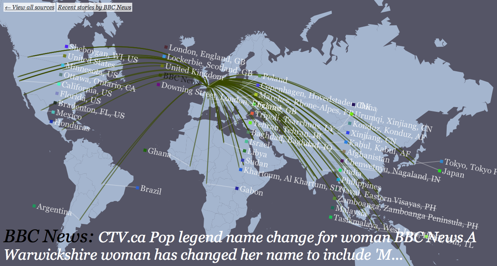

A growing movement toward a cartographically literate art practice has emerged which seeks to use cartographic tools and attitudes in a critical and activist manner. Some groups, such as Proboscis, take explicit inspiration from Guy Debord's psychogeographic movement of the 1950s. Others such as the Center for Urban Pedagogy, use map-making as a means to explore social and environmental ills in a participatory manner. What these practitioners have in common is that they have begun to appropriate tools and techniques from professional cartography, but to apply them towards new, and often more socially and politically engaged ends.
Artists like Bill Rankin use the thin-lined mechanical aesthetics of GIS to comment upon the normally cartographically invisible American Indian reservations, emphasizing the incompatiblity between such modes of representation and the more complex geographies which actually exist in the world. His map, `The United States?' offers two separate attempts, but Rankin points out the difficulties in such an adaptation of techniques:
At stake here is the European definition of nation-state sovereignty, which implies a close (and, ideally, consensual) relation between an area on a map and the governance of its inhabitants. It is not simply that a European-style map has a hard time representing the sovereignty rights (or claims) of indigenous peoples; rather, such relations are a priori impossible to depict on a typical map. [51]
The collective Hackitectura inverts a map of the Gibralter area with Morocco and Western Sahara on top and Spain and Portugal below, while highlighting the complex landscape of legal and illegal immigration. Graphs, diagrams of security systems, and satellites dot the map depicting `the multitude versus the Empire', along with marks for immigrant detainment and the Spanish tomato farms whose need for cheap labor feeds much of the migration. The map-makers' willingness to abandon the guise of objectivity in favor of such a clear geopolitical agenda is typical of many members of this wider cartographic movement.
|

|
Proboscis in particular has produced a number of works with urban communities with the goal of helping people `articulate and share their xperiences of inhabiting the city' and `become co-creators and not just consumers of information' -- the latter of which parallels the neogeographers' interest in making participants of their audience (See Section 2.3). Their projects take the form of map-making workshops and activities, using paper as well as GPS-enabled mobile phones. They focus on recording the historical narratives of participants while relating the stories to geographic positions and routes in a kind of city-wide game. Proboscis uses the term `bodystorming' to describe their methodology, wherein `the transformation of abstract ideas and concepts into physical experiences, a tactile approach allowing us to investigate different qualities that ideas may have when applied to physical settings – part of a dynamic and continuous process of trial and error.' [47]
My own project ARMSFLOW (http://armsflow.org, 2007) describes in map form the sale of conventional arms between governments worldwide from 1950-2006, using data culled from the Stockholm International Peace Research Institute, or SIPRI. Red lines of varying thickness (representing an abstract metric called TIV, or trend-indicator value) link buyers to sellers, and users may explore the data by country or by year. A followup project, NEWSFLOW (http://newsflow.cartagen.org, 2009), displays in a similar format connections between news organizations and the locations of stories they publish, as scraped from Google News. Though visually compelling and information-rich, the shortcomings of these two maps are emblematic of the `data visualization' movement; Natalie Jeremijenko addresses the crux of the matter when she questions their sources:
...the designers of these types of projects use extant data sets from the EPA, from the Toxic Relief Inventory, federal databases, and do so without criticism, without asking how the data is generated, who collected it and under what conditions. That is, what does the data actually represent? [25]
This criticism was revelatory to me, and led to my increased interest in engaging participants not only in interpreting information, but in creating information. By augmenting the literacy and ability of individuals to capture, author, and frame the acquisition of new data, we engage a broader public at the level of researcher and of investigator. Rather than playing solely the interpretive role of the designer or editor, I have attempted to insert participants further upstream -- closer to the source -- with the intent of gaining greater leverage in the construction of geography.
http://www.sciencedirect.com/science?_ob=ArticleURL&_udi=B6VG2-4XHJX4B-1&_user=10&_coverDate=08/31/2009&_rdoc=1&_fmt=high&_orig=search&_sort=d&_docanchor=&view=c&_searchStrId=1186930669&_rerunOrigin=google&_acct=C000050221&_version=1&_urlVersion=0&_userid=10&md5=a9327ffa62e089e863f892a4551c1717Intervention: Mapping is critical! - This intervention targets the much heralded demise of the map in geography and the recently proposed “rethinking” of maps. It comprises contributions from two political geographers, a military geographer, a political scientist, and two activist cartographers and argues that there is not so much a need to “rethink” maps, but to “re-engage” with the material practices of mapping, and above all to “re-make” maps.